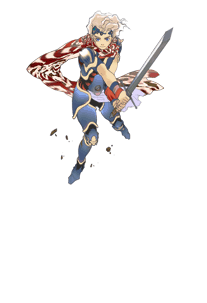
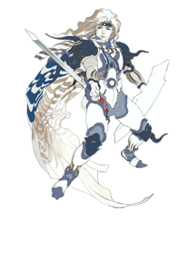
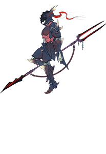

6 |
Prólogo y personajes |
 |
Las guerras del pasado han tocado fin y los Lunarios y su luna no son más que un recuerdo lejano. Ha vuelto la paz a la Tierra y la prosperidad de antaño se ha recuperado. Aun así, los vientos de cambio están a punto de barrerlo todo. Mientras los cristales brillan discretamente, las sombras oscuras del mundo despiertan otra vez. Una nueva luna aparece en el firmamento...
Ceodore, príncipe del reino de Baronia, desoyó los deseos de su madre, la reina Rosa, y se alistó en la fuerza aérea de élite de los Alas Rojas para ser armado caballero.
Los Alas Rojas fueron asaltados por un enjambre de monstruos, pero Ceodore salió vivo de este calvario gracias a la ayuda de un espadachín errante.

Ceodore Es el príncipe del reino de Baronia, el hijo del rey Cecil y de la reina Rosa, el hombre y la mujer que lucharon para salvar el mundo en el pasado. La corte del castillo tiene puestas grandes esperanzas en él, pero el chico duda seriamente de sus propias habilidades.

Cecil Es un paladín de ascendencia Lunaria. Subir al trono de Baronia no ha alterado para nada el sentimiento protector que profiere a su pueblo, y tanto el ejército como la ciudadanía confían ciegamente en él. 
Rosa La maga blanca es la reina de Baronia y apoya a Cecil amorosa e incondicionalmente. Está muy preocupada por Ceodore, pues éste ha entrado en un periodo emocional de su vida algo turbulento.

Kain Era un antiguo Draconarius de Baronia que se recluyó en la cima del Monte Ordalía para superar sus propias debilidades. Desde entonces, se desconoce su paradero. 
Cid Es el ingeniero de aeronaves del reino de Baronia. Pese a que ya tiene la barba blanca, se niega a retirarse y sigue demostrando su gran habilidad para el cargo. Tiene muy buenas relaciones con Cecil y los demás, y es una especie de abuelo adoptivo para Ceodore. |
 |
 |
 |